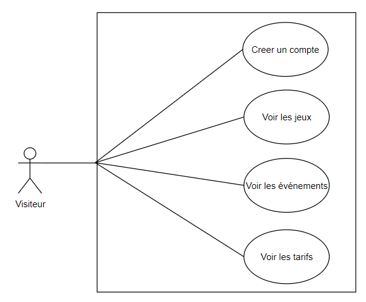

Ce projet de première année a été développé en HTML/PHP. Nous avons utilisé l'éditeur VSCode.
Ce site est développé autour de trois acteurs : membre, adhérent et simple visiteur.
Le projet était découpé en deux sprints différents : sprint Rigel et sprint Sirius.
La version n°1 du site consistait à développer un site web sans l'intégration de la base de données. Elle est majoritairement codée en HTML.
Le PHP est utilisé pour définir la structure du site.
La version n°2 devait correspondre à une version du site web en dynamique avec l'intégration de la base de données.
Pour ces deux sprints, nous avions à notre disposition des annexes complémentaires afin de mieux comprendre le fonctionnement de l'application ainsi que les informations essentiels à prendre en compte. Voir les Annexe 1 et Annexe 2
Nous avions à notre disposition un cahier des charges dans lequel nous avions une directive générale à suivre ainsi que les fonctionnalités à développé en fonction des rôles utilisateur. Voir le cahier des charges
L'organisation de chaque Sprint est importante car c'est ce qui va nous permettre de préparer notre environnement de développement
et de l'organisation à adopter. Pour cela, nous commençons à définir nos outils de gestion, de communication et de développement.
A noter dans le second Sprint que nous implémenterons une base de données pour rendre le site dynamique.
Pour ce début de projet, nous partons du cahier des charges existant afin de cerner les enjeux.
Avant de passer à la phase de développement, nous avons créee une charte graphique sur Figma
disponible ici :
Voir les maquettes
Cela faisait partie de la demande puisque nous devions obtenir une validation de nos professeurs avant de commencer à développer.
Nous avons ensuite défini une arborescence de fichiers comme ci-dessous :
Enfin, à chaque début de séance, nous discutions entre nous des fonctionnalités en cours et des difficultés rencontrées de la séance précédente.
Puis à chaque fin de séance, nous faisions un point sur notre avancé et prenions note des prochaines étapes pour le développement.
A la fin des deux sprints, nous avons passé une petite épreuve orale afin de faire un compte rendu autour de la gestion de projet
et la gestion d'équipe.
Voir le diaporama
Nous entamons notre premier sprint Rigel. Il correspond à la Version 1.0 de notre application web avec un descriptif comme ci-dessous.
Pour notre tout premier projet de BTS SIO, mon équipe et moi-même avons choisi d'utiliser l'outil Trello car nous n'avions pas encore connaissance d'autres outils de gestion.
Framagit est l'interface utilisée pour versionner notre projet. C'est également le moyen qui permet d’assurer la continuité de celui-ci. C'était également la première fois que l'on utilisait un outil pour versionner nos projets. Nous avons donc appris petit à petit à prendre nos marques et utiliser l'outil.
En fin de sprint, nous avons réalisé des schémas UML afin de mieux documenter notre application et de nous préparer au passage oral de l'épreuve. Voici les fonctionnalités que peut effectuer un visiteur, un adhérent et un membre.
Nous entamons cette fois-ci le second sprint Sirius. Il correspond à la Version 2.0 qui correspond à la version dynamique de notre application web avec un descriptif comme ci-dessous.
Pour cette seconde version de Maison des Jeux, l'objectif était de mettre en place le système de gestion de BDD PostgreSQL à l'aide du logiciel d'administartion de BDD Dbeaver. Voici un aperçu de la base de données en fin de sprint :
Au bout des deux sprints, nous avons établi une rétrospective permettant ainsi de voir comment nous avons géré la gestion de projet et la gestion d'équipe. Cela permet de prendre du recul et nous améliorer lors des prochains projets.


VSCode
PHP
DBeaver
PostgreSQL
Framagit
Trello